1과목: 수처리공정
1. 가중응집제에 관한 설명으로 옳지 않은 것은?
2. 횡류식 경사판침전지에 관한 설명으로 옳지 않은 것은?
3. 고속응집침전지를 선택할 때 고려할 사항으로 옳은 것을 모두 고른 것은?
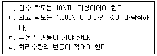
4. 정수장 여과지의 기능으로 옳지 않은 것은?
5. 일반정수처리공정의 응집ㆍ침전공정이 생략된 여과방식은?
6. 완속여과지에 관한 설명으로 옳은 것은?
7. 급속여과지의 여과면적과 지수 및 형상에 관한 설명으로 옳은 것은?
8. 정수처리기준의 운영에 관한 설명으로 옳지 않은 것은?
9. 수돗물 유충 발생 예방 및 대응방안에 관한 설명으로 옳지 않은 것은?
10. 잔류염소 기준에 관한 설명으로 옳은 것은?
11. 생산량이 100,000 m3/d인 정수장에서 원수 중에 망간이온이 0.5mg/L 존재하는 경우 망간이온의 산화처리를 위해 필요한 이론적인 염소요구량(kg/d)은?
12. 상수도설계기준상의 염소처리에 관한 설명으로 옳지 않은 것은?
13. 염소제의 특징으로 옳지 않은 것은?
14. 배출수 시설에 관한 설명으로 옳지 않은 것은?
15. 탈수기에 관한 옳은 설명을 모두 고른 것은?
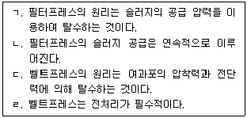
16. 미량 물질의 제거 방법에 관한 설명으로 옳지 않은 것은?
17. 다음과 같은 오존처리 공정에서의 오존이용률(흡수율,%)과 전달효율(%)을 순서에 맞게 옳게 나열한 것은?
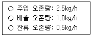
18. 오존처리 시설에 관한 설명으로 옳지 않은 것은?
19. 활성탄 처리 방식에 관한 설명으로 옳지 않은 것은?
20. 막여과 정수시설에 관한 설명으로 옳지 않은 것은?
2과목: 수질분석 및 관리
21. 수질오염공정시험기준상 정도관리에 관한 다음 ( )에 맞는 내용을 순서대로 나열한 것은?
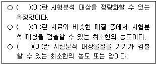
22. 먹는물수질공정시험기준상 잔류염소 제거를 위해 사용할 수 있는 시약이 아닌 것은?
23. 먹는물수질공정시험기준상 암모니아성질소-이온크로마토그래피에 관한 설명으로 옳은 것은?
24. 수질오염공정시험기준상 화학적산소요구량 측정법 중 다이크롬산포타슘법에 관한 설명으로 옳지 않은 것은?
25. 수질오염공정시험기준상 과불화화합물 시험법에 관한 설명으로 옳은 것은?
26. 먹는물 수질감시항목중 깔다구 유충-현미경 계수법에 관한 사항으로 옳지 않은 것은?
27. 사용용량 10,000 m3, 최대통과유량 5,000m3/h인 정수장의 도류벽에 의해 산출된 장폭비(L/W)가 25인 경우 소독능계산값(CT계산값)은? (단, 잔류소독제 농도의 최소값은 1.0mg/L이다.)
28. 휘발성유기화합물질을 퍼지ㆍ트랩-기체크로마토그래프법으로 분석 시 간섭물질과 해결방안을 옳게 짝지은 것은?
29. 먹는물 수질감시항목 운영 등에 관한 고시상 먹는물 중 마이크로시스틴 LR의 측정에 적용할 수 없는 방법은?
30. 응집제 주입률 결정에 관한 설명으로 옳지 않은 것은?
31. 용적 250m3인 혼화조에서 속도경사 400s-1일 때, 교반기의 축동력(kW)은? (단, 물의 점성계수 μ=1.3×10-2g/(cmㆍs), 교반기 효율은 80%이다.)
32. 오존 처리설비에서 오존주입률에 관한 설명으로 옳지 않은 것은?
33. 입상활성탄 설비에서 역세척에 관한 설명으로 옳지 않은 것은?
34. 물환경보전법령상 총량관리 단위유역의 수질 측정방법에 관한 설명으로 옳지 않은 것은?
35. 먹는물관리법령상 먹는샘물 등 제조업자의 자가 품질 검사 기준에 관한 설명이다. ( ) 안에 들어갈 내용으로 옳은 것은?(문제 오류로 확정답안 발표시 모두 정답처리 되었습니다. 여기서는 1번을 누르면 정답 처리 됩니다.)
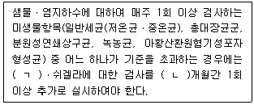
36. 하천법상 국가하천에 관한 설명으로 옳지 않은 것은?
37. 먹는물 수질감시항목 운영 등에 관한 고시상 먹는물 수질감시항목에 관한 검사주기가 다른 항목은?
38. 수도법령상 수도시설의 기술진단에 관한 설명으로 옳지 않은 것은?
39. 상수도 정수시설의 활성탄흡착시설에서 분말활성탄처리의 특징으로 옳지 않은 것은?
40. 수도법령상 절수설비 및 절수기기중 대ㆍ소변 구분용 대변기에 적용하는 평균사용수량 계산식으로 옳은 것은?
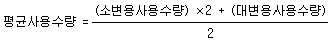
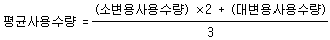
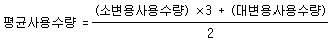
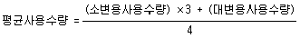
3과목: 설비운영(기계·장치 또는 계측기 등)
41. 입상활성탄 슬러리 이송배관의 설계조건으로 옳지 않은 것은?
42. 횡류식 침전지의 정류설비 및 유출설비에 관한 설명으로 옳은 것은?
43. 오존발생장치와 주입설비에 관한 설명으로 옳지 않은 것은?
44. 그림과 같은 고속응집침전지 형식은?
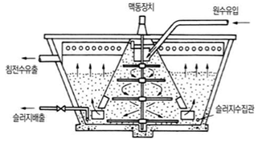
45. 액화염소 주입설비에 관한 설명으로 옳은 것은?
46. 활성탄 세척설비에 관한 설명으로 옳지 않은 것은?
47. 이온교환처리설비에 관한 설명으로 옳은 것을 모두 고른 것은?
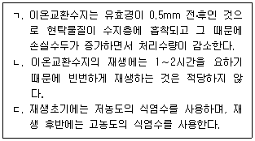
48. 펌프의 압력제어 방식 중 토출압일정제어 방식을 적용하는 경우는?
49. 펌프의 캐비테이션 현상과 방지 대책에 관한 설명으로 옳지 않은 것은?
50. 다음과 같은 조건에서 펌프가 규정유량을 양수할 때 토출관에서의 유출속도(m/s)는 약 얼마인가?
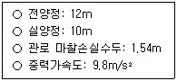
51. 자가용전기설비에서 1회선 수전방식의 특징으로 옳지 않은 것은?
52. 변압기 병렬운전에 관한 설명으로 옳지 않은 것은?
53. 22.9 kV, 600 kW, 역률 80 %(지상)의 부하설비를 역률 95%(지상)로 개선하려고 할 때 소요되는 전력용콘덴서 용량(kVar)은 약 얼마인가?
54. 전자유량계 설치 시 유의사항으로 옳은 것은?
55. 감시조작설비에 관한 설명으로 옳은 것은?
56. 초음파유량계에 관한 설명으로 옳지 않은 것은?
57. 외부전원법 전기방식(防蝕) 중 양극을 지표면에서 15∼60m 깊이에 수직렬로 설치하는 방식(防蝕)시스템은?
58. 산업안전보건법령상 작업장의 작업환경측정 항목이 아닌 것은?
59. 산업안전보건법령상 “낙하물 경고”에 해당하는 표지는?
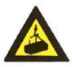
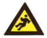
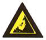
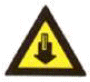
60. 산업안전보건법령상 안전관리자의 업무에 해당하는 것을 모두 고른 것은?
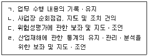
4과목: 정수시설 수리학
61. 유량측정에 사용되는 도구와 방법에 관한 설명으로 옳지 않은 것은?
62. 에너지보정계수와 운동량보정계수에 관한 설명으로 옳지 않은 것은?
63. Darcy-Weisbach 공식으로 구한 마찰손실수두가 가장 큰 것은?
64. 다음 중 FLT계 차원과 MLT계 차원이 같은 것은?
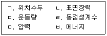
65. 직경이 100mm이고 길이는 200m인 관에 2m/s의 평균유속으로 물이 흐를 때, 마찰손실수두가 6m이었다. 마찰속도는 약 얼마인가(cm/s)? (단, 중력가속도는 9.8 m/s2이다.)
66. 완전유체(이상유체)에 관한 설명으로 옳은 것을 모두 고른 것은?
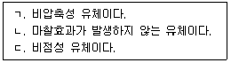
67. 비누풍선에 작용하는 표면장력에 관한 설명으로 옳은 것은?
68. 면적이 16 m2인 사각형 여과지의 여과량이 2,000m3/d이고, 역세척이 매일 15 L/m2/s로 5분 동안 실시될 때, 역세척수량(m3/d)은 약 얼마인가?
69. 침전지에서 제거율을 향상시키기 위한 방법으로 옳지 않은 것은?
70. 관수로 흐름에서 발생하는 손실수두에 관한 설명으로 옳은 것을 모두 고른 것은?
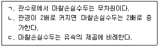
71. 개수로 흐름상태를 나타내는 프루드수(Froude number)에 관한 설명으로 옳은 것을 모두 고른 것은?
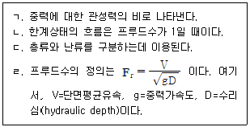
72. 수평하게 설치된 직경 300mm인 원형관에 물이 흐르고 있다. 300m를 흐르는 동안 0.12 MPa의 압력강하가 발생했다면, 관벽에서의 마찰응력(N/m2)은?
73. 침전이론에서 자주 사용되는 스토크스(Stokes) 법칙에 관한 설명으로 옳지 않은 것은?
74. 조도계수 0.014, 동수경사 0.01, 관경 800mm인 원형관로에서 수심이 0.4m일 때의 유량(m3/s)은? (단, Manning 공식에 따른다.)
75. 펌프의 제원 결정과 관계가 없는 것은?
76. 펌프특성(성능)곡선과 운전에 관한 설명으로 옳지 않은 것은?
77. 아래 조건에서 펌프의 효율은 약 얼마인가?
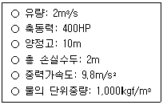
78. 임펠러의 직경이 동일한 두 펌프의 동력(P)과 분당 회전수(N)의 관계식으로 옳은 것은? (단, P1은 N1 일 때 동력, P2는 N2일 때 동력이다.)
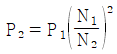
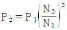
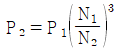
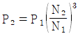
79. 펌프의 수격작용을 방지하기 위한 주된 방법 중 압력상승 경감방법으로 옳지 않은 것은?
80. 펌프의 용량과 대수 결정에 관한 설명으로 옳은 것을 모두 고른 것은?
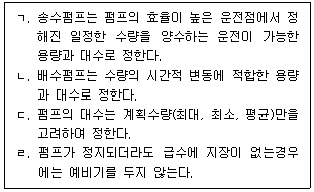